Memory-native orchestration
The mind that runs
your agent company.
Open-source, self-hosted orchestration for teams of AI agents.
Your org leaves a track. Overmind remembers it.

If an agent is an employee, Overmind is the company — and it remembers.
A Rust server and a React UI that organize AI agents into a company: an org chart, budgets, governance, isolated git worktrees, and a tamper-evident audit trail. Everyone runs agents. Overmind is the one that remembers what they did and proves it.
The org that learns
The whole org shares a persistent brain — Wadachi (轍) — over MCP. Agents load past decisions, patterns, and fixes before working, and record what they learned. Nobody starts cold.
History you can verify
Every action is an append-only, SHA-256 hash-chained event, committed with the change it records. Tamper with history and GET /audit/verify pinpoints the exact broken block.
Manage work, not terminals
One server runs the company: atomic budgets enforced at checkout, one isolated git worktree per run, and approval gates that block until you sign off.


Powered by Wadachi 轍
The brain, not a footnote.
轍 wadachi — the ruts a cart leaves in a road. Overmind's first-party managed brain: one persistent memory per organization, wired in over MCP. Optional by design — unset it and Overmind runs identically, memoryless. Meet Wadachi →
Quickstart
Self-hosted, no account, your data on your machine.
# Docker (recommended) $ docker compose up --build # → http://localhost:7070 # Or from source $ cargo run # Rust control plane + web UI # Organizational memory (optional) — point at any MCP memory server $ OVERMIND_MEMORY_CMD="BRAIN_DIR=/path/to/brain wadachi" cargo run
Mount your repos and set OVERMIND_AGENT_CMD to your agent CLI — see the full quickstart. Memory unset? Overmind runs identically, memoryless.